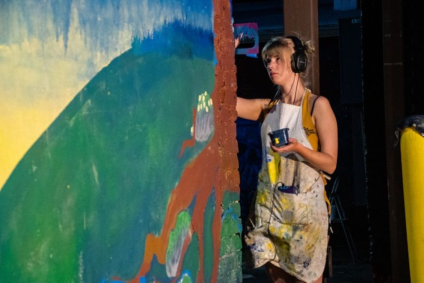

Painted Outlines Versus Labels

A visitor stopped in front of our board last winter and asked which system we were using. Fair question. The left half is painted silhouettes, the right half is small printed tags under each hook, and the seam runs straight through the metric sockets like a border nobody agreed on. We use both, and the border keeps moving. Six square metres leaves no room for a convention you only half believe in.
Two marks, two different sentences
The distinction is not decorative. A label is addressed to a person already looking for something: it names what lives in that position and answers what goes here. An outline is addressed to the room: it holds the shape, and when the tool is gone the shape stays behind and says this is missing now. One is a directory entry. The other is an alarm that only goes off when it should.
That is why they feel so different at close-out. Scanning labels means reading forty little words, one at a time, from close range. Scanning outlines means standing back and comparing filled shapes with empty ones — something the eye does almost without permission. We looked at how a silhouette betrays a missing tool in The Shape That Tells on You: the wall does the counting, in a language of holes.
Where labels genuinely win
Labels win on ambiguity, and ambiguity is not rare. Two combination wrenches one millimetre apart have essentially the same silhouette. Trace both, hang them back in the wrong order, and the wall reports itself complete while the wrong tool goes out all week. A stamped number settles that in half a second; a painted shape never will, because the shapes are the same shape.
Labels also win on the cost of revision. Reprinting a tag takes a minute and leaves no scar. Moving an outline means masking, repainting the board colour, waiting for it to cure, then painting the new shape — and the ghost usually shows through in raking light anyway. Where a position is likely to change, the label is the cheap option.
And labels handle everything whose identity is not in its outline: battery packs, identical black cases, boxed blades. A silhouette of a rectangle tells you nothing.
A label is read by a person who is looking for something. An outline is read by a room that isn’t looking at all.
Where outlines win
Outlines win at distance, and they win on absence. From three metres, in poor light, at the end of a long day, an empty white shape is legible when a six-point label is not. You need that information exactly when you are least willing to walk the wall and read it. The outline turns an inventory check into a glance.
They also win on return behaviour. A shape is a target. People put things back into shapes without deciding to; they have to decide to read a label. That difference compounds over a few hundred returns — a subject we chase in What a Missing Outline Actually Costs.
| Situation on the wall | Outline | Label | What tends to happen |
|---|---|---|---|
| Two tools with near-identical profiles, different size stamps | Weak | Strong | Shapes fill correctly but with the wrong tool; the count looks clean |
| Tool picked up and rehung dozens of times a day, often with oil on it | Strong | Weak | Adhesive tags lift and curl; paint under a hook keeps working |
| Item whose model changes every year or two | Weak | Strong | Repainting is a weekend job, so it never happens |
| Reading the whole wall from across the room at close-out | Strong | Weak | Nobody reads forty tags; some people find they do read forty gaps |
| Shared crib where tools move between several benches | Partial | Strong | Position alone can’t say who has it; names and numbers can |
The hybrid, and how it rots
Almost every shop drifts to the same compromise: paint the outline, then write a small size mark inside it. You keep the distance-readable gap and resolve the near-identical pairs at arm’s length. For a year it is the best of both.
Then the tool mix changes. Someone buys a stubby ratchet and the old outline is forty millimetres too long. A set is replaced and the new handles are fatter. A position gets borrowed for a jig during a rush and never given back. Each of these is small, and each is a reason to repaint that nobody has time for, so the mark stays while the meaning drains out of it. Now the outline does not match the tool and the number inside it used to be true. New people trust it anyway. Experienced people stop looking at the wall entirely, which is worse.
Tracing, paint, and the rub
The practical failures are boring and repeatable, which is the good news — they can be designed out.
- Trace hanging, not flat. A tool laid on the bench sits differently from a tool on a hook. Hang it, let it settle, then draw. Outlines traced flat run a few degrees off and the tool never quite lands in them.
- Keep the pen vertical. A marker tilted around a thick handle adds millimetres on every pass, and silhouettes traced that way come out fatter than the tools they represent.
- Leave a visible margin. If the shape is exactly the tool’s size, the tool covers it and the wall reads blank whether or not anything is there. A small halo keeps the filled state readable too.
- Choose paint for abrasion, not colour. The tool rubs its own mark every day. Thin flat wall paint burnishes and lifts at the contact point first, right where the shape is most recognisable. Harder coatings sold for floors tend to last; some shops skip paint and cut the silhouette from vinyl tape, which peels off cleanly when the layout changes.
- Contrast beats prettiness. The only test that counts is whether the empty shape reads from the far side of the room. Dark on dark is decoration.
When a label is the better answer
Reach for a label when the information is a name rather than a form: sizes that differ only by a stamp, consumables counted instead of hung, anything shared across benches where the useful fact is who has it. Reach for a label when the position is provisional and you want to change your mind cheaply. And reach for a label when the outline would be a rectangle — a rectangle is not a silhouette, it is a shrug.
Keep the outline for tools that earn a permanent address: the ones your hand goes to without looking, the ones whose absence should be loud. A board that mixes the two on purpose reads better than one that mixes them by accident — which mostly means writing down which rule applies where, before the border starts moving again.
A note on scope
This describes how two marking conventions behave on one small wall — not a standard, and not a recommendation for your shop. Layouts and tool mixes differ; the only reliable test is to run a convention for a few weeks and notice what the wall stops telling you.